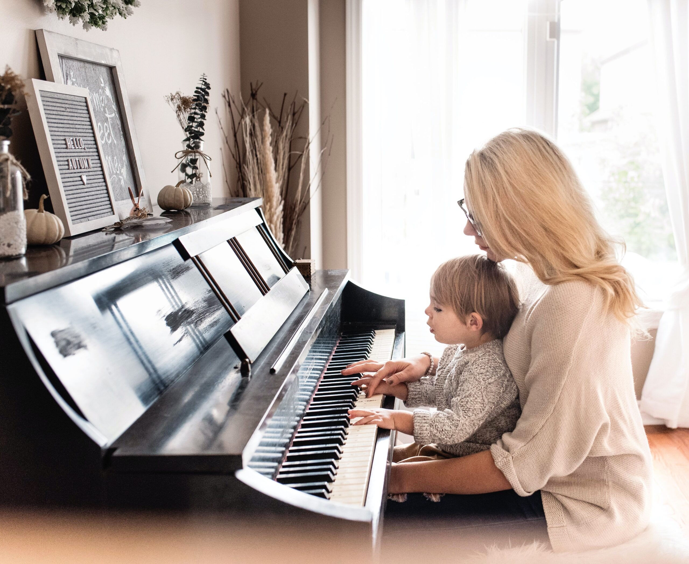

Jouer du piano stimule les deux hémisphères du cerveau simultanément. Cela améliore la mémoire, la concentration et les capacités d'apprentissage. Des études montrent que les pianistes ont une meilleure mémoire verbale et des aptitudes mathématiques renforcées.
Le piano exige de coordonner les deux mains indépendamment, ce qui développe une motricité fine exceptionnelle et améliore la coordination main-œil.
Jouer du piano est un exutoire émotionnel puissant Réduit le stress et l'anxiété Procure un sentiment d'accomplissement et de satisfaction Peut être une forme de méditation active.
Apprendre le piano enseigne la rigueur, la patience et la régularité. Ces qualités se transfèrent dans tous les domaines de la vie (école, travail, sport…).
Des recherches suggèrent que la pratique musicale régulière ralentit le déclin cognitif lié à l'âge et peut aider à prévenir certaines formes de démence.
Le piano est souvent considéré comme l'instrument idéal pour débuter : les notes sont visibles, la posture est naturelle, et il permet de jouer mélodie et harmonie en même temps.
